Actions on Googleは、スマートスピーカー、携帯電話、車、テレビ、ヘッドフォンなど、5億以上のデバイスにわたって、Googleの仮想パーソナルアシスタントであるGoogleアシスタントの機能を拡張するためのソフトウェアを作成できる、開発者向けプラットフォームです。
ユーザーは、食料品の購入や乗車予約など、何かを達成するためにGoogleアシスタントを会話に加えることができます（現在の機能の完全なリストについては、アクションディレクトリをご覧ください）。開発者は、Actions on Googleを使用して、ユーザーとサードパーティのフルフィルメントサービスとの間の楽しく効果的な会話体験を簡単に作成し活用することができます。
このコードラボでは、Actions on Googleを使った基本的なアクションを開発します。そして、そのアクションに対して、Daily UpdatesやPush Notificationsを使った、よりリッチな体験を追加します。
このコードラボは、Actions on GoogleおよびDialogflowを使用した基本的なアクションの開発方法についての詳細な説明は行いません。一般的なアクションの開発方法については、Build Actions for the Google Assistant (Level 1) や Build Actions for the Google Assistant (Level 2) を参照ください。
何をつくりますか？
このコードラボでは、次の機能を備えた対話アクションを作成します。
- ユーザーは、明示的にアクションを名前で呼び出すことによって会話を開始することができます。
- 会話に入ると、ユーザは最近起きたニュースや、特定の日付のニュースをアクションに問い合わせます。アクションは指定された条件に一致するニュースを読み上げます。
- ユーザが「毎日ニュースを受け取る」とアクションに話しかけると、アクションはDaily Updates機能を呼び出します。Googleアシスタントはユーザに「何時にニュースを受け取るか」を問い合わせます。ユーザが希望する時間を指定することで通知登録が完了し、会話が終了します。
- ユーザが「リアルタイムにニュースを受け取る」とアクションに話しかけると、アクションはPush Notification機能を呼び出します。Googleアシスタントはユーザに通知の送信を許可するかどうか問い合わせます。ユーザが許可することで通知登録が完了し、会話が終了します。
- ユーザにPush Notificationを送信するコードを作成し、実際に通知を送ります。
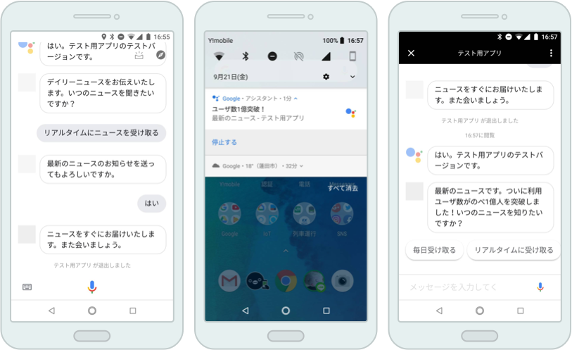
What you'll learn
- Daily Updates機能を使った定期的な通知処理の登録方法。
- Push Notifications機能を使ったリアルタイムな通知の送信方法。
必要なもの
以下のツールがあなたの環境に必要となります。
- Chrome ウェブブラウザ。
- Android スマートフォン。または「Googleアシスタント」アプリがインストールされた iPhone スマートフォン。
- NodeJS Version 6, 8, 10 のいずれかの最新バージョン。
- インストールされているNodeJS、npmを使ってシェルコマンドを実行するためのターミナル。
Daily UpdatesやPush Notificationsといった機能を解説する前に、まずは土台となるアクションを準備しましょう。このコードラボでは、「デイリーニュース」アクションを作ります。「デイリーニュース」アクションが提供する機能は、以下とします。
- ユーザがアクションを呼び出すと、アクションはいつのニュースを知りたいかを聞いてきます。
- ユーザが「最近のニュース」と言うと、アクションは24時間以内に起きたニュースを伝えます。
- ユーザが「今日のニュース」や「9月22日のニュース」というように特定の日付を言った場合は、アクションはその日に起きたニュースを伝えます。
- ユーザが「最新のニュース」と言うと、アクションは最も最近に起きたニュースを1件伝えます。
- ユーザは「さようなら」というような言葉により、いつでも会話を終えることができます。
具体的には、以下のような会話を想定します。このままでは十分なニュースサービスとは言えませんが、コードラボのサンプルアクションとしては十分です。
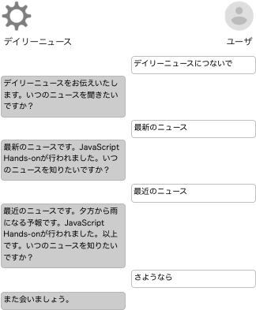
この会話は、ユーザからアクションに対して問いかけを続けていくことで対話が進みます。このコードラボでは、後ほど以下の問いかけについて、通知をサポートします。
- 「最近のニュース」をDaily Updatesにより毎日指定の時間に通知が来るようにします。
- 「最新のニュース」をPush Notificationsによりリアルタイムで通知が来るようにします。
アクションを作成するには、Actions Projectを作成し、アクションごとに2つの内容（インテントとフルフィルメント）を定義します。
コードラボのこのセクションでは、Actions ConsoleでActions projectを設定する方法について説明します。
Googleの権限設定を確認する
このコードラボで作成するアクションをテストするには、必要な権限を有効にする必要があります。
- "Activity Controls" ページに行きます (https://myaccount.google.com/activitycontrols)。
- サインインされていなければ、あなたのGoogleアカウントでサインインします。
- 以下の権限を有効にします。
- Web & App Activity
- Device Information
- Voice & Audio Activity
Actions projectを作成する
Actions projectは、Actions directory のリストに掲載されるメタデータ（名前、説明、カテゴリ）を持つあなたのアクションのコンテナです。
アクションの構築を開始するには、まず以下のようにActions projectを作成します。
- Actions Console を開きます。
- Add/import project をクリックします。
- "daily-news-codelab" のように、Project name を入力します。この名前は、内部参照用です。あとで、あなたはこのプロジェクト向けに外部用の名前をセットすることができます。また、言語と国については、それぞれ "Japanese" および "Japan" を選択してください。
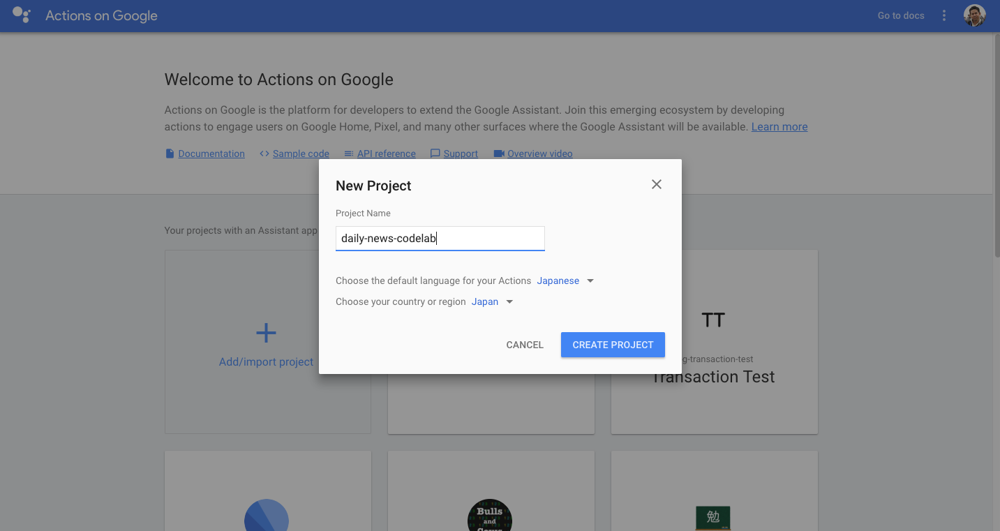
- Create Project をクリックします。
- カテゴリを選択するのではなく、右上隅にある Skip をクリックします。

- 左のナビにある Build > Actions をクリックします。
- Add your first Action をクリックします。
- Custom intent カード上で、Build をクリックします。もう一つのタブで、Dialogflow Consoleが開くでしょう。
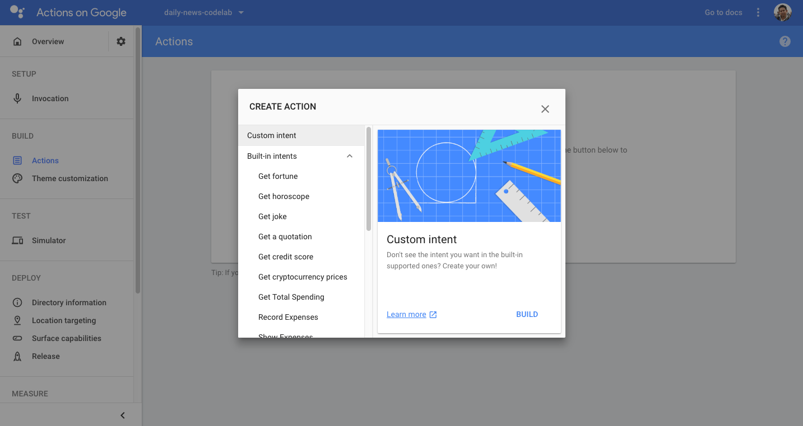
Dialogflowエージェントを作成する
Actions projectを作成したら、Dialogflowエージェントを作成して、あなたのプロジェクトに関連付けを行います:
- 上記の手順を実行した後、上部にActions projectの名前が表示されているDialogflow Consoleに、既にあなたはいるはずです。あなたのGoogleアカウントを使用するようにDialogflowを承認し、利用規約に同意する必要があります。
- DEFAULT LANGUAGEを "Japanese - ja" に変更します。また、 DEFAULT TIME ZONE が "Asia/Tokyo" になっていることを確認します。そして、Create をクリックします。

エージェントの作成が成功した場合は、Intents ページに移動します。あなたは、Dialogflowエージェントがユーザーの要求にどのように応答するかをカスタマイズできるようになりました。
では、先ほど作成したDialogflowエージェントを使って、会話を定義していきましょう。このコードラボでは、以下のインテントを定義することで、デイリーニュースアクションの会話を組み立てます。
- "Default Welcome Intent" - 会話の起点となるウェルカムインテントです。
- "Quit" - 会話終えるインテントです。
- "Recent News" - 最近（24時間以内）のニュースを得るインテントです。
- "Past News" - 指定日付のニュースを得るインテントです。
- "Latest News" - 最新のニュースを得るインテントです。
ウェルカムインテントを変更する
すべてのActions projectには、ユーザが会話を開始するためのエントリポイントとして機能するウェルカムインテントが必要です。ウェルカムインテントは、ユーザがアクション名を発声して明示的にアクションを呼び出すときにトリガーされます。
デフォルトでは、Dialogflowは私たちのためにウェルカムインテントを作成しています。このコードラボでは、ユーザーが "テスト用アプリにつないで" と発言したときにトリガーされるウェルカムインテントを変更します。
以下の手順に従って、ウェルカムインテントを修正します。
- Dialogflow Consoleの Intents ページにて、Default Welcome Intent をクリックします。
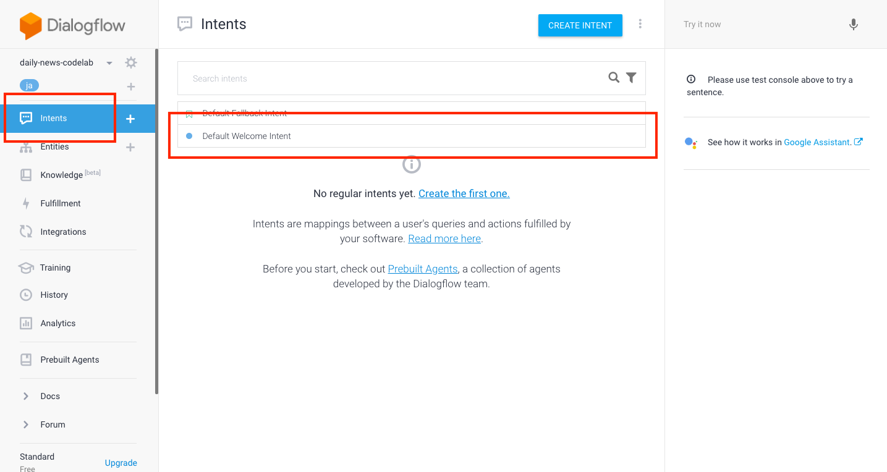
- 下にある Fulfillment をクリックして、フルフィルメントを設定するためのUIを表示します。そして、Enable webhook call for this intent を ON にします。
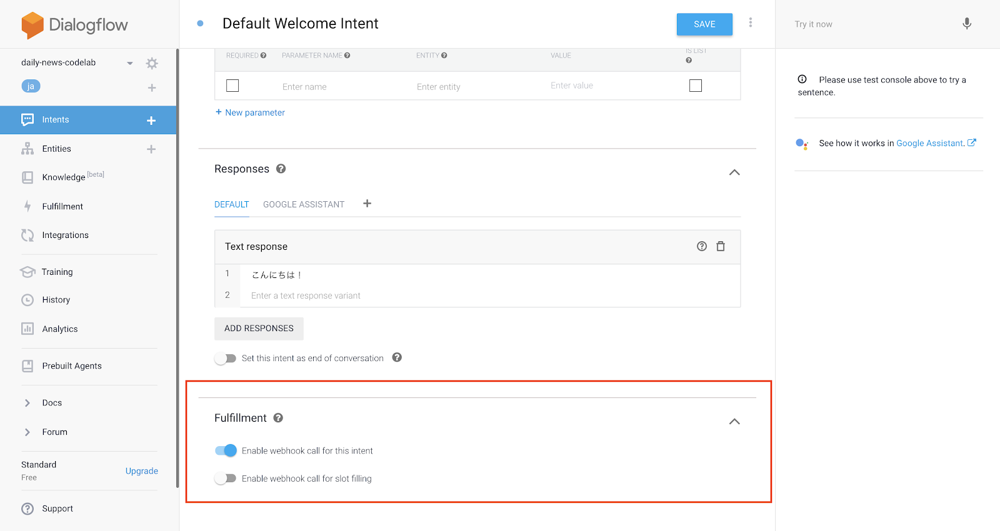
- 上にある SAVE ボタンを押して、変更内容を保存します。
Quitインテントの作成
ユーザが会話を終えたい際の Quit インテントを作成します。Dialogflowに対して以下の操作を行ってください。
- 左のナビゲーションメニューにある Intents メニュー項目の右にある＋アイコンをクリックします。
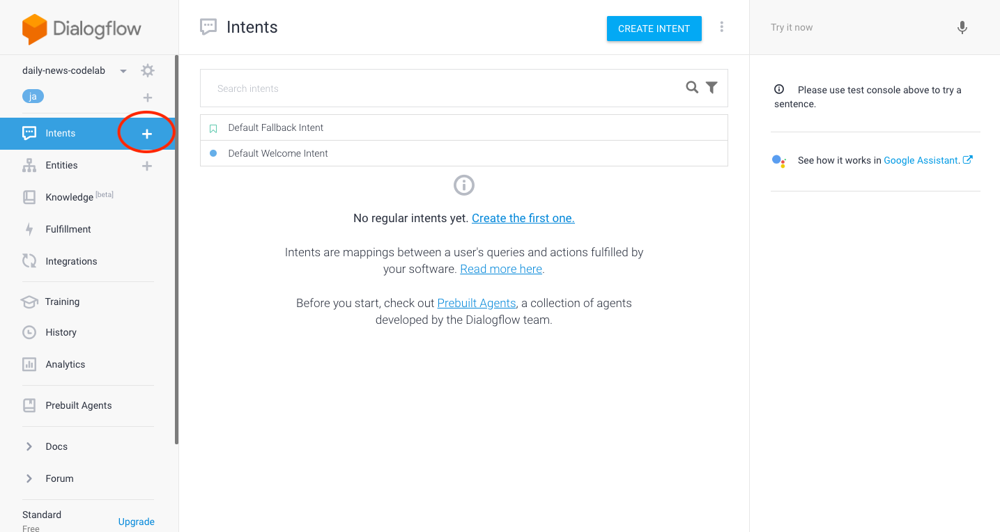
- Intent name に "Quit" と入力します。
- Training phrases に "さようなら" と入力し、ENTER キーを押します。
- Responses の Text Response に "また会いましょう。" と入力し、ENTER キーを押します。そして、Set this intent as end of conversation を ON にします。
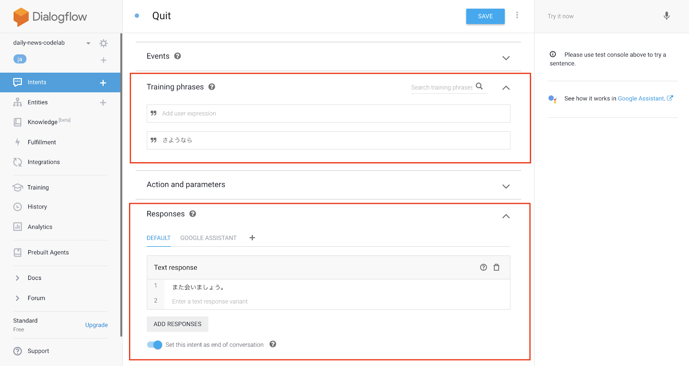
- 上にある SAVE ボタンを押して、変更内容を保存します。
Recent Newsインテントの作成
ここから、ユーザが希望するニュースの条件を指定するためのインテントを作成しましょう。まず、24時間以内に起きた最近のニュースを希望する Recent News インテントを作成します。Dialogflowにて以下の操作を行ってください。
- 左のナビゲーションメニューにある Intents メニュー項目の右にある＋アイコンをクリックします。
- Intent name に "Recent News" と入力します。
- Training phrases に以下を入力します。
- "最近"
- "最近のニュース"
- "最近のニュースを聞きたい"
- "最近のニュースを知りたい"
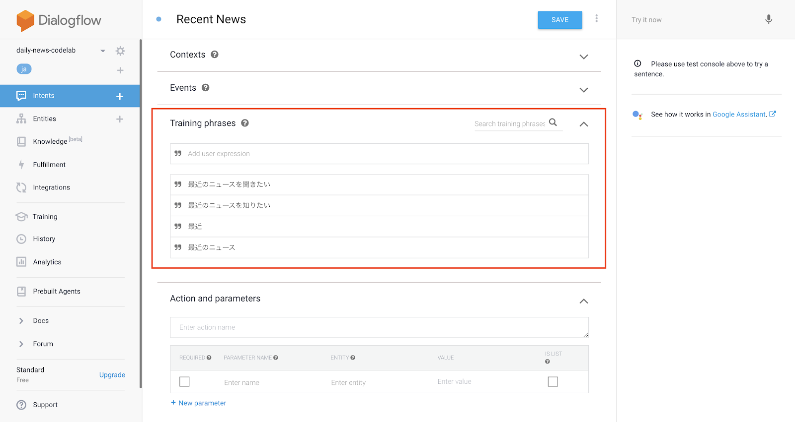
- 下にある Fulfillment をクリックして、フルフィルメントを設定するためのUIを表示します。そして、Enable webhook call for this intent を ON にします。
- 上にある SAVE ボタンを押して、変更内容を保存します。
Past Newsインテントの作成
次に、ユーザが指定した日付のニュースを希望する Past News インテントを作成します。Dialogflowにて以下の操作を行ってください。
- 左のナビゲーションメニューにある Intents メニュー項目の右にある＋アイコンをクリックします。
- Intent name に "Past News" と入力します。
- Training phrases に "今日のニュース" と入力し、ENTER キーを押します。
これにより、Dialogflowは "今日の" の部分が日付だと自動的に認識します。そして、日付を示す @sys.date というシステムエンティティの date パラメータが割り当てられます。
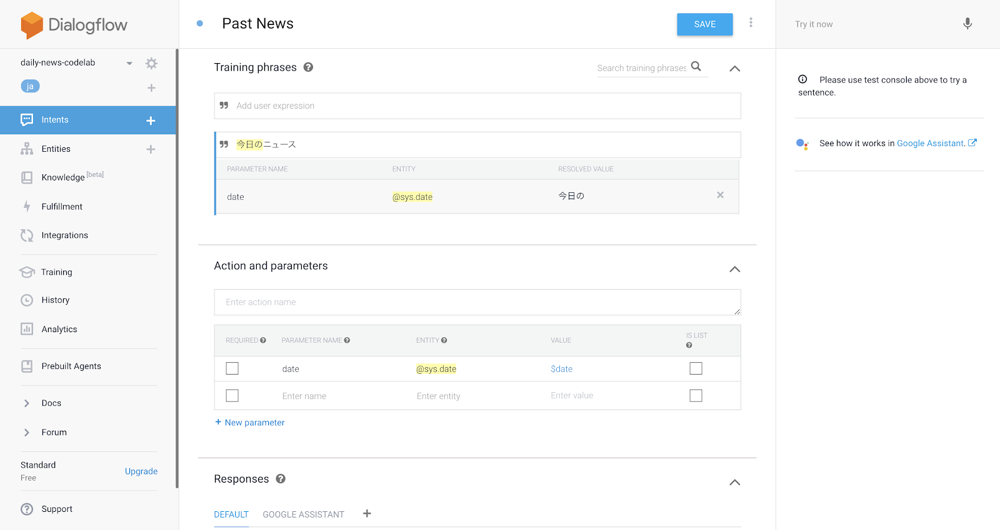
- "今日のニュース" だけでなく、Training phrases に以下を追加します。
- "今日"
- "今日のニュースを教えて"
- "今日のニュースを知りたい"
- 下にある Fulfillment をクリックして、フルフィルメントを設定するためのUIを表示します。そして、Enable webhook call for this intent を ON にします。
- 上にある SAVE ボタンを押して、変更内容を保存します。
Latest Newsインテントの作成
最後に、最新のニュースを希望する Latest News インテントを作成します。Dialogflowにて以下の操作を行ってください。
- 左のナビゲーションメニューにある Intents メニュー項目の右にある＋アイコンをクリックします。
- Intent name に "Latest News" と入力します。
- Training phrases に以下を入力します。
- "最新のニュース"
- "最新"
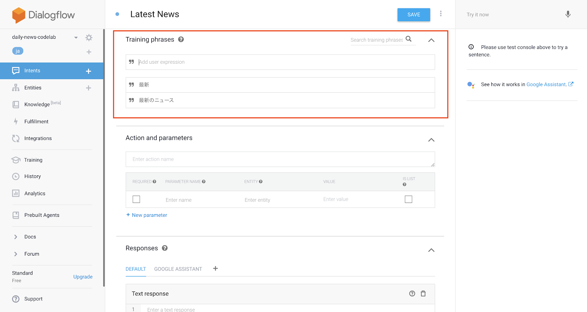
- 下にある Fulfillment をクリックして、フルフィルメントを設定するためのUIを表示します。そして、Enable webhook call for this intent を ON にします。
- 上にある SAVE ボタンを押して、変更内容を保存します。
以上でデイリーニュースアクションの基本的なインテントの作成は完了です。しかし、まだデイリーニュースアクションとの会話を行うことはできません。
先ほど、いくつかのインテントを作成しましたが、そのほとんどはフルフィルメントの呼び出しを ON に設定しました。ここでは、フルフィルメントのコードを作成します。
フルフィルメントを構築する
フルフィルメントは、Webhookで呼び出されるプログラムコードです。このコードラボでは、Webhookを構築してデプロイするために、Dialogflow Console のインラインエディタを使います。あなたのアクションにwebhookを構築するために、以下を行います:
- 左のナビゲーションから、Fulfillment をクリックします。
- Inline Editor のトグルを DISABLED から ENABLED にします。これにより、インラインエディタが利用可能になります。
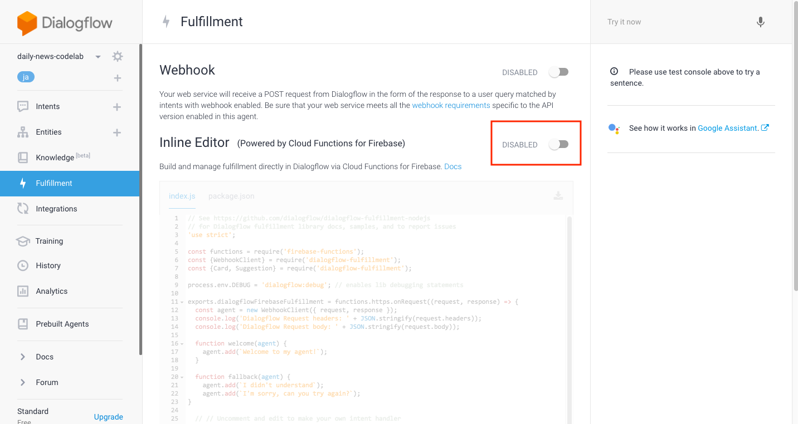
- index.js ファイルが選択されていることを確認して、インラインエディタ内を以下の内容で置き換えます。
index.js
"use strict";
const functions = require("firebase-functions");
const {
dialogflow,
Suggestions,
RegisterUpdate,
UpdatePermission
} = require("actions-on-google");
// SDKの利用準備
const app = dialogflow({
debug: true
});
// "Default Welcome Intent"を処理するハンドラ関数の登録
// 指定範囲のニュース一覧取得関数
// 返事をする関数
// "Recent News"を処理するハンドラ関数の登録
// "Past News"を処理するハンドラ関数の登録
// "Latest News"を処理するハンドラ関数の登録
// "Setup Daily Updates"を処理するハンドラ関数の登録
// "Finish Daily Updates Setup"を処理するハンドラ関数の登録
// "Setup Push Notifications"を処理するハンドラ関数の登録
// "Finish Push Notifications Setup"を処理するハンドラ関数の登録
// SDKをFirebase Functionsとして登録
exports.dialogflowFirebaseFulfillment = functions.https.onRequest(app);- Deploy をクリックします。DialogflowがあなたのWebhookコードを準備してデプロイするために、このページで数分待つ必要があるでしょう。コードが正常にデプロイされると、Deploy ボタンの隣にある "Last deployed" タイムスタンプが更新されるのがわかります。
コードを理解する
Webhookのためのこのコードは、JavaScriptで実装されています。Dialogflowのインラインエディタを使うと、あなたのWebhookコードはCloud Functions for Firebaseを使ってクラウド内のマネージド環境にデプロイされます。
このWebhookコードは、Actions on Google Node.js クライアントライブラリを使って、アシスタントがWebhookに送信するHTTPリクエストに応答しています。そのライブラリを使うことで、あなたは Dialogflow API のラッパーとして振る舞う DialogflowApp オブジェクトを作成することができます。
このコードラボでは、DialogflowApp オブジェクト型の app 変数を作成しています。
"Default Welcome Intent" インテントハンドラ関数を作成する
index.js 内に、以下のコードを追加してください。追加場所は、コメント行が書かれている場所です。
"Default Welcome Intent" インテントハンドラ関数
// "Default Welcome Intent"を処理するハンドラ関数の登録
app.intent("Default Welcome Intent", conv => {
conv.ask("デイリーニュースをお伝えいたします。いつのニュースを聞きたいですか？");
conv.ask(new Suggestions(["最新のニュース", "最近のニュース", "昨日のニュース"]));
});app.intent() 関数は、インテントを処理するコールバックを宣言するために使用されます。この app.intent() 関数は、2つの重要な引数を受け取ります。
- インテント名: コールバックを登録する対象のインテント名を指定します。
- コールバック関数: 呼び出されたインテントに対応して実行されるコールバック関数です。
コールバック関数の第1引数には、以下の値が渡されます。
Dialogflow Conversationオブジェクト（変数名:conv）。これは、ダイアログの状態をクライアントライブラリで抽象化したものであり、現在アクティブなDialogflowコンテキスト、ユーザのデバイスのサーフェスで利用可能な機能など、Webhookへの着信要求の値を表すプロパティを含みます。
Default Welcome Intentハンドラ関数では、以下の処理を行っています。
conv.ask()関数に文字列を渡すことで、ユーザへの返事をGoogleアシスタントに渡しています。conv.ask()関数にSuggestionsオブジェクトを渡すことで、ユーザへの返事と共に、Suggestion Chip をGoogleアシスタントに渡しています。
Suggestion Chip を使うことで、もしユーザが画面付きデバイスを利用している場合には、文字入力や発話をすることなく、タップするだけでGoogleアシスタントに問いかけができるようになります。具体的には、以下のように返事の吹き出しの下に、Suggestion Chipが表示されます。
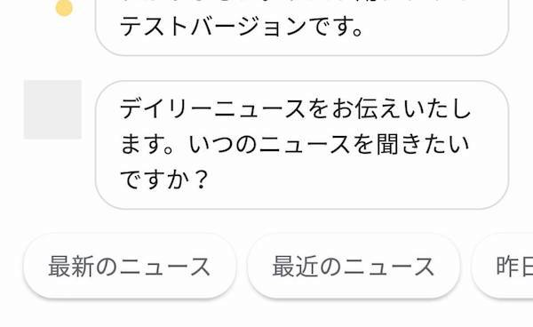
ニュースを提供する関数を作成する
index.js 内に、以下のコードを追加してください。追加場所は、コメント行が書かれている場所です。
指定範囲のニュース一覧を取得する関数
// 指定範囲のニュース一覧取得関数
const getNews = (start, end) => {
return [
{
created: new Date("2018-09-24T09:00:00+0900"),
contents: "夕方からゲリラ豪雨になる予報です。"
},
{
created: new Date("2018-09-24T22:30:00+0900"),
contents: "明日19日の午前10時からJavaScript勉強会が社内で行われます。ぜひご参加ください。"
},
{
created: new Date("2018-09-25T10:00:00+0900"),
contents: "ついに利用ユーザ数がのべ1億人を突破しました！"
}
].filter(x => {
// 指定された範囲に限定する
return (start <= x.created.getTime()) && (x.created.getTime() <= end);
}).sort((a, b) => {
// ニュースの古い順に並び替える
return a.created.getTime() - b.created.getTime();
}).map(x => {
// コンテンツだけ返す
return x.contents;
});
};本来であれば、ニュースはデータベースなどから動的に取得するべきですが、このコードラボでは固定的にニュース一覧を得るための getNews() 関数を作ることにします。上記のコードでは、3つのニュースを定義しています。ニュースの内容は自由で良いですが、 created で指定される日時は、以下を含めてください。それは、動作確認時に役に立ちます。
- 今日の日付で、現在時刻から24時間以内。
- 昨日の日付で、現在時刻から24時間以内。
- 昨日の日付で、現在時刻から24時間よりも前の時刻。
ここで、もう一つ便利な関数を追加します。いくつかのインテントを処理するコールバック関数からユーザに返事を送る際に、Suggestion Chipを含めます。何度もSuggestion Chipを指定するコードを書くのは良くないので、返事を送信するための reply() 関数を作りましょう。index.js 内に、以下のコードを追加してください。追加場所は、コメント行が書かれている場所です。
返事をする関数
// 返事をする関数
const reply = (conv, message) => {
conv.ask(message);
conv.ask(new Suggestions([
"毎日受け取る", "リアルタイムに受け取る",
"最新のニュース", "最近のニュース", "昨日のニュース"
]));
};"Recent News" インテントハンドラ関数を作成する
では、ニュースを提供する関数を使って、各種インテントの処理を作成していきます。まずは、24時間以内のニュース一覧を伝えるための Recent News インテントハンドラ関数です。 index.js 内に、以下のコードを追加してください。追加場所は、コメント行が書かれている場所です。
"Recent News" インテントハンドラ関数
// "Recent News"を処理するハンドラ関数の登録
app.intent("Recent News", conv => {
// 24時間以内のニュースを得る
const news = getNews(Date.now() - 24 * 60 * 60 * 1000, Date.now());
// 返事をする
if (news.length === 0) {
reply(conv, "最近のニュースは特にありません。いつのニュースを知りたいですか？");
} else {
reply(conv, `最近のニュースです。${news.join("")}以上です。いつのニュースを知りたいですか？`);
}
});24時間以内にニュースがあるかどうかで、返事の内容を変化させています。
"Latest News" インテントハンドラ関数を作成する
次に、最新のニュース1件を伝えるための Latest News インテントハンドラ関数です。 index.js 内に、以下のコードを追加してください。追加場所は、コメント行が書かれている場所です。
"Latest News" インテントハンドラ関数
// "Latest News"を処理するハンドラ関数の登録
app.intent("Latest News", conv => {
// 24時間以内のニュースを得る
const news = getNews(Date.now() - 24 * 60 * 60 * 1000, Date.now());
if (news.length === 0) {
reply(conv, "最新のニュースは特にありません。いつのニュースを知りたいですか？");
} else {
reply(conv, `最新のニュースです。${news[news.length - 1]}いつのニュースを知りたいですか？`);
}
});ここでは、24時間以内のニュースを最新のニュースの対象としています。
"Past News" インテントハンドラ関数を作成する
最後に、ユーザが指定した日付のニュースを伝えるための Past News インテントハンドラ関数です。 index.js 内に、以下のコードを追加してください。追加場所は、コメント行が書かれている場所です。
"Past News" インテントハンドラ関数
// "Past News"を処理するハンドラ関数の登録
app.intent("Past News", (conv, {date}) => {
// 指定日付のニュースを得る
const start = new Date(date).setHours(0, 0, 0, 0);
const news = getNews(start, start + 24 * 60 * 60 * 1000 - 1);
// 返事をする
if (news.length === 0) {
reply(conv, "その日のニュースは特にありません。いつのニュースを知りたいですか？");
} else {
reply(conv, `その日のニュースです。${news.join("")}以上です。いつのニュースを知りたいですか？`);
}
});Recent News インテントハンドラ関数や Latest News インテントハンドラ関数と違って、Past News インテントハンドラ関数では、Dialogflowの解析結果を一つ受け取っています。先ほどは conv 引数一つのみでしたが、ここでは {date} という第2引数を指定しています。Past News インテントをDialogflow Consoleで登録した際に、 @sys.date エンティティの date パラメータが自動的に認識されたのを覚えていますか？ここでは、その認識された値を受け取り、ニュースの検索条件として利用しています。
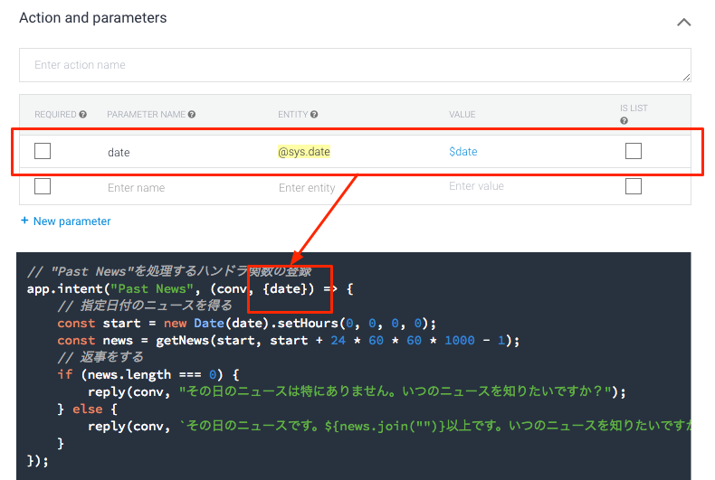
Past News インテントハンドラ関数の記述が終わったら、 DEPLOY ボタンを押してコードをFirebaseにデプロイしてください。
動作確認する
ここまでの作業によって、デイリーニュースアクションは基本的な機能を提供することができるようになりました。ここで、Actions Console シミュレータを使って、実際に動作確認を行ってみましょう。
Actions Console シミュレータであなたのアクションをテストするには、以下を行います:
- 左のナビゲーションのDialogflow Consoleにて、Integrations をクリックします。その後、Google Assistant > Integration Settings をクリックします。
- あなたのActions projectを更新するために Test をクリックして、Actions Console シミュレータ内にそれを読み込みます。（もしあなたが "Check auto-preview setting" ダイアログに遭遇した場合は、"Auto-preview changes" オプションを有効にしたまま、Continue をクリックします。）
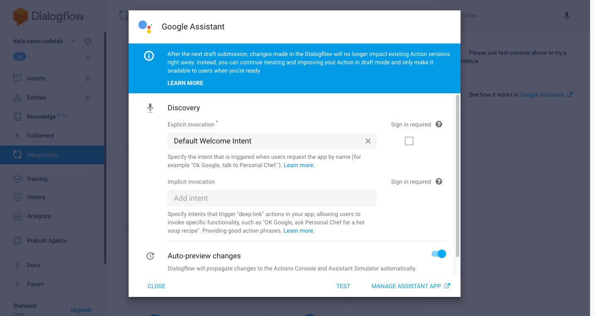
- シミュレータにてあなたのアクションをテストするために、Input フィールド内に "テスト用アプリにつないで" とタイプして、Enterキーを叩きます。
- 以下のフレーズを発言して、適切な返事がアクションから得られるかどうか確認をしてください。
- "今日のニュース"
- "最近のニュース"
- "最新のニュース"
- "さようなら"
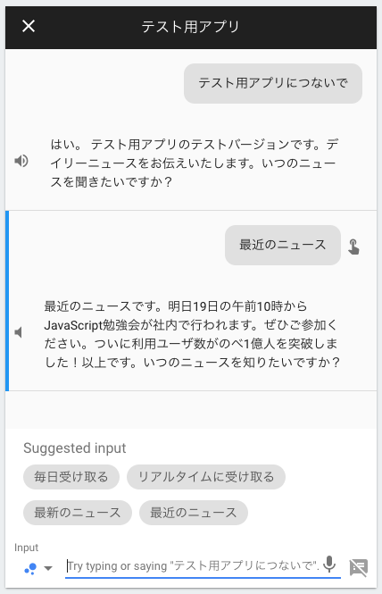
ここまでで、デイリーニュースアクションの基本的な機能の実装が終わりました。
このセクションでは、デイリーニュースアクションに対して、Daily Updatesを追加します。ユーザが毎日指定の時間に最近のニュースに関する通知をDaily Updatesを使って受け取ることができるように機能追加を行います。
Daily Updatesの仕組みを理解する
アクションがDaily Updatesを利用することで、ユーザは毎日指定された時刻に通知を受け取ることができます。ユーザがその通知をタップすると、Googleアシスタントによってそのアクションが呼び出され、さらにアクションに含まれる特定のインテントがトリガーされます。
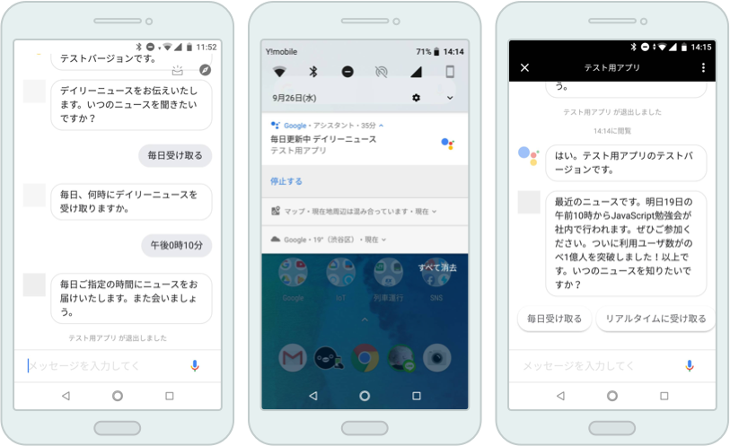
Daily Updatesによってユーザにアクションから通知が行われる流れは、以下となります。

- ユーザがGoogleアシスタント経由でアクションに対して、Daily Updatesの登録を希望するフレーズを発話します。
- アクションのフルフィルメントは、SDK が提供する
RegisterUpdateクラスを使って、Daily Updatesの登録をActions on Googleに依頼します。 - Googleアシスタントがユーザに対して、毎日何時に通知を受け取りたいかを問い合わせます。ユーザは時間を指示することで、Daily Updatesの登録が完了します。
- ユーザが指定した時間付近で、Googleアシスタントはユーザのデバイスに対して、通知を送信します。
- ユーザが通知が来ていることに気づき、その通知をタップします。タップ後、Googleアシスタントが起動します。
- Googleアシスタントは、通知内容に基づいて、アクションを呼び出します。そして、(2)で指定されたインテントがトリガーされます。
- アクションはインテントハンドラ関数から返事をします。
このコードラボでは、最近のニュースを伝える Recent News インテントをDaily Updatesとして登録できるようにします。
Daily Updatesを登録するインテントを追加する
最初に、ユーザが最近のニュースを毎日受け取りたいことを伝えるためのインテントをDialogflowに追加します。Dialogflow Consoleにて以下の操作を行ってください。
- 左のナビゲーションメニューにある Intents メニュー項目の右にある＋アイコンをクリックします。
- Intent name に "Setup Daily Updates" と入力します。
- Training phrases に以下を入力します。
- "毎日受け取る"
- "毎日ニュースを受け取る"
- "毎日ニュースを教えて"
- "毎日教えて"
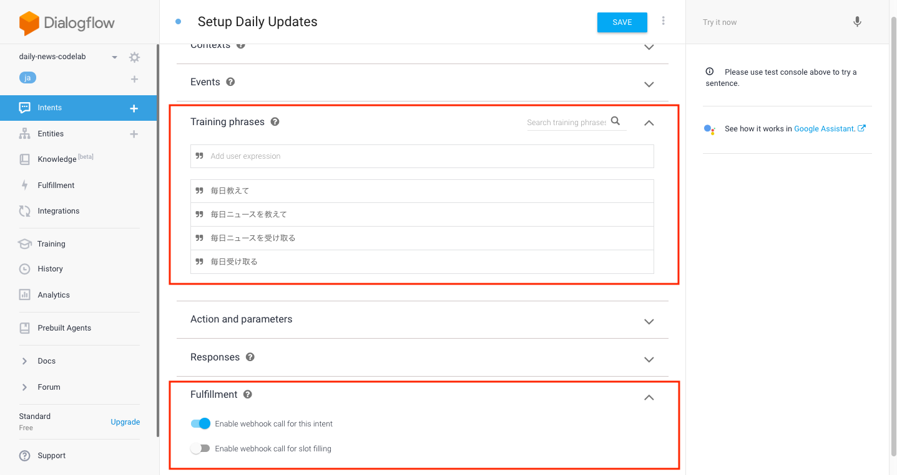
- 下にある Fulfillment をクリックして、フルフィルメントを設定するためのUIを表示します。そして、Enable webhook call for this intent を ON にします。
- 上にある SAVE ボタンを押して、変更内容を保存します。
"Setup Daily Updates" インテントハンドラ関数を作成する
次に、Daily Updatesを登録する処理を行う Setup Daily Updates インテントハンドラ関数を追加します。 index.js 内に、以下のコードを追加してください。追加場所は、コメント行が書かれている場所です。
"Setup Daily Updates" インテントハンドラ関数
// "Setup Daily Updates"を処理するハンドラ関数の登録
app.intent("Setup Daily Updates", conv => {
// Daily Updatesの登録を要求する
conv.ask(new RegisterUpdate({
intent: "Recent News",
frequency: "DAILY"
}));
});Daily Updatesを登録するために、SDK が提供する RegisterUpdate クラスを使います。その際に、以下の情報を与えます。
intent- ユーザが通知をタップした際にトリガーされるインテントの名前を指定します。frequency- Daily Updatesを示す "DAILY" 文字列を指定します。
これにより、Googleアシスタントがアクションの代わりにユーザに指定時刻を問い合わせします。
Daily Updatesの登録結果を受け取るインテントを追加する
ユーザがGoogleアシスタントに時刻を指定した後に、Actions on Googleはアクションに actions_intent_REGISTER_UPDATE イベントを送信します。このイベントを受け取るためのインテントをDialogflowに追加します。Dialogflow Consoleにて以下の操作を行ってください。
- 左のナビゲーションメニューにある Intents メニュー項目の右にある＋アイコンをクリックします。
- Intent name に "Finish Daily Updates Setup" と入力します。
- Events に "actions_intent_REGISTER_UPDATE" と入力します。
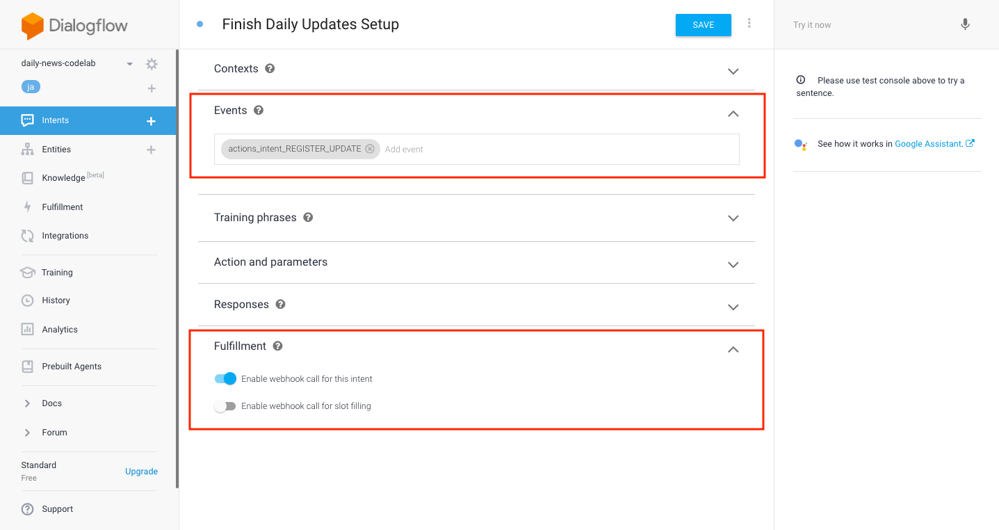
- 下にある Fulfillment をクリックして、フルフィルメントを設定するためのUIを表示します。そして、Enable webhook call for this intent を ON にします。
- 上にある SAVE ボタンを押して、変更内容を保存します。
"Finish Daily Updates Setup" インテントハンドラ関数を作成する
フルフィルメントにて actions_intent_REGISTER_UPDATE イベントを処理する関数を追加します。 index.js 内に、以下のコードを追加してください。追加場所は、コメント行が書かれている場所です。
"Finish Daily Updates Setup" インテントハンドラ関数
// "Finish Daily Updates Setup"を処理するハンドラ関数の登録
app.intent("Finish Daily Updates Setup", (conv, params, registered) => {
if (registered && registered.status === "OK") {
conv.close("毎日ご指定の時間にニュースをお届けいたします。また会いましょう。");
} else {
reply(conv, "気が向いたら登録してください。いつのニュースを知りたいですか？");
}
});Daily Updates が正しく登録されたかどうかは、 app.intent() 関数の第2引数で渡しているコールバック関数の第3引数として渡される値を見ることで判断することができます。上記のコードでは、 registered という引数です。この値が undefined ではなく、 status 値として "OK" がセットされていれば、Daily Updates が登録されたことになります。
もしDaily Updatesが登録されていれば、 conv.close() 関数を使って、返事をすると同時に会話を終了します。
Recent News インテントをDaily Updatesとして登録する
Daily Updates機能を使ってユーザに通知を送信するためには、Actions on Google Consoleにて、インテントをDaily Updateの対象として登録することが必要です。登録を行うために、以下の操作を行います。
- 左のナビゲーションのDialogflow Consoleにて、Integrations をクリックします。その後、Google Assistant > Integration Settings をクリックします。
- Implicit invocation の Add intent フィールドに "Recent News" と入力して Enter キーを押します。
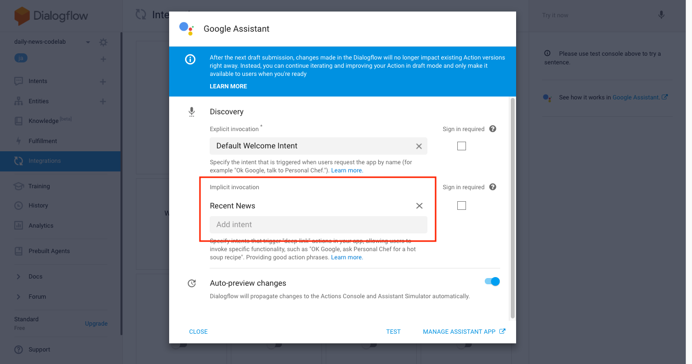
- TEST をクリックします。これにより、新規タブにて Actions on Google Console が開きます。
- Actions on Google Consoleの左にあるナビゲーションメニューから Actions をクリックします。その後、右の一覧から Recent News の行をクリックします。
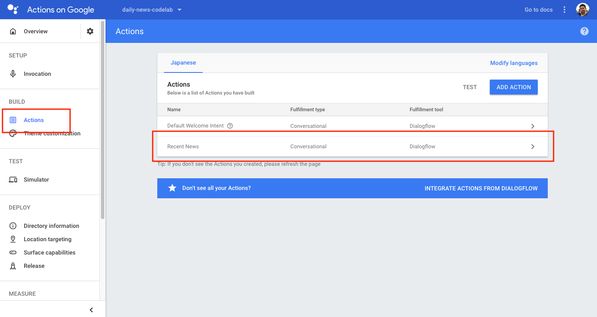
- ページの下にある Would you like to offer daily updates to users? を ON に変更します。そして、 Content title フィールドに "デイリーニュース" と入力します。この文字列は、通知に含まれます。
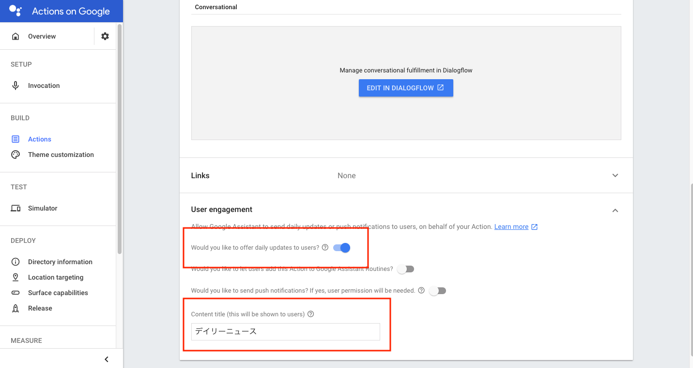
- ページの右上にある SAVE ボタンを押します。
Daily Updatesの動作確認をする
では、Daily Updatesの動作確認を行いましょう。Actions on GoogleのActions シミュレータではなく、スマートフォンにて動作確認を行ってください。動作確認の手順は、以下となります。
- スマートフォン上で、Googleアシスタントを起動します。そして、"テスト用アプリにつないで" と話しかけて、アクションを呼び出します。アクションから、ウェルカムメッセージが届きます。
- "毎日受け取る" と話しかけます。
- Googleアシスタントが通知を送信する時刻を聞いてきますので、以下の例のように、現在時刻から10分以上先の時間を回答します。
- "午後4時30分"
- "16時45分"
- "4:30am"
- "16:45"
- 時間になるまで待ちます。
- 通知がスマートフォンに届いたら、その通知をタップします。
通知を解除する場合は、受け取った通知にある「停止」をタップします。これにより、Googleアシスタントは通知を止めて良いかどうか聞いてきますので、"はい" と答えてください。
ここからは、デイリーニュースアクションに対して、Push Notificationsを追加します。ユーザに最新のニュースをリアルタイムで通知する機能をPush Notificationsを使って実現します。
Push Notificationsの仕組みを理解する
Push Notifications機能を利用することで、通知をユーザにいつでも送信することができます。ただし、通知の送信は、ユーザから許諾を得た後に可能となります。ユーザが受け取った通知をタップすると、Googleアシスタントによってそのアクションが呼び出され、さらにアクションに含まれる特定のインテントがトリガーされます。
Push Notificationsによってユーザにアクションから通知が行われる流れは、以下となります。

- ユーザがGoogleアシスタント経由でアクションに対して、Push Notificationsを希望するフレーズを発話します。
- アクションのフルフィルメントは、SDK が提供する
UpdatePermissionクラスを使って、Push Notificationsによる通知の許可をActions on Googleに依頼します。 - Googleアシスタントがユーザに対して、通知の許諾を問い合わせます。ユーザは許諾するかどうか返事を行います。
- ユーザが許諾した場合、アクションは Actions API を使って通知を送信します。通知は、ユーザのスマートフォンに届きます。
- ユーザが通知が来ていることに気づき、その通知をタップします。タップ後、Googleアシスタントが起動します。
- Googleアシスタントは、通知内容に基づいて、アクションを呼び出します。そして、(2)で指定されたインテントがトリガーされます。
- アクションはインテントハンドラ関数から返事をします。
このコードラボでは、最新のニュースを伝える Latest News インテントをPush Notificationsにより通知できるようにします。このセクションでは、最初にユーザに通知を送信することを許諾してもらうために必要な機能を追加します。
Push Notificationsを希望するインテントを追加する
最初に、ユーザが最新のニュースをリアルタイムで受け取りたいことを伝えるためのインテントをDialogflowに追加します。Dialogflow Consoleにて以下の操作を行ってください。
- 左のナビゲーションメニューにある Intents メニュー項目の右にある＋アイコンをクリックします。
- Intent name に "Setup Push Notifications" と入力します。
- Training phrases に以下を入力します。
- "リアルタイムに受け取る"
- "リアルタイム"
- "すぐに受け取る"
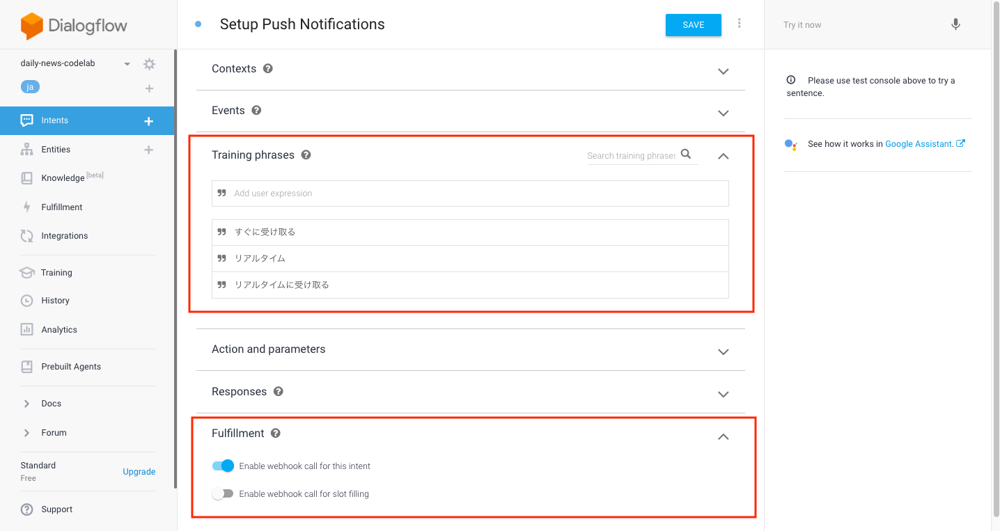
- 下にある Fulfillment をクリックして、フルフィルメントを設定するためのUIを表示します。そして、Enable webhook call for this intent を ON にします。
- 上にある SAVE ボタンを押して、変更内容を保存します。
"Setup Push Notifications" インテントハンドラ関数を作成する
次に、Push Notificationsを希望する処理を行う Setup Push Notifications インテントハンドラ関数を追加します。 index.js 内に、以下のコードを追加してください。追加場所は、コメント行が書かれている場所です。
"Setup Push Notifications" インテントハンドラ関数
// "Setup Push Notifications"を処理するハンドラ関数の登録
app.intent("Setup Push Notifications", conv => {
conv.ask(new UpdatePermission({
intent: "Latest News"
}));
});Push Notificationsによる通知の送信についてユーザから許諾を得るために、SDK が提供する UpdatePermission クラスを使います。その際に、以下の情報を与えます。
intent- ユーザが通知をタップした際にトリガーされるインテントの名前を指定します。
これにより、Googleアシスタントがアクションの代わりにユーザに通知を送信して良いかどうかの問い合わせを行います。
Push Notificationsの許諾結果を受け取るインテントを追加する
ユーザがGoogleアシスタントに許諾するかどうかを返答した後に、Actions on Googleはアクションに actions_intent_PERMISSION イベントを送信します。このイベントを受け取るためのインテントをDialogflowに追加します。Dialogflow Consoleにて以下の操作を行ってください。
- 左のナビゲーションメニューにある Intents メニュー項目の右にある＋アイコンをクリックします。
- Intent name に "Finish Push Notifications Setup" と入力します。
- Events に "actions_intent_PERMISSION" と入力します。
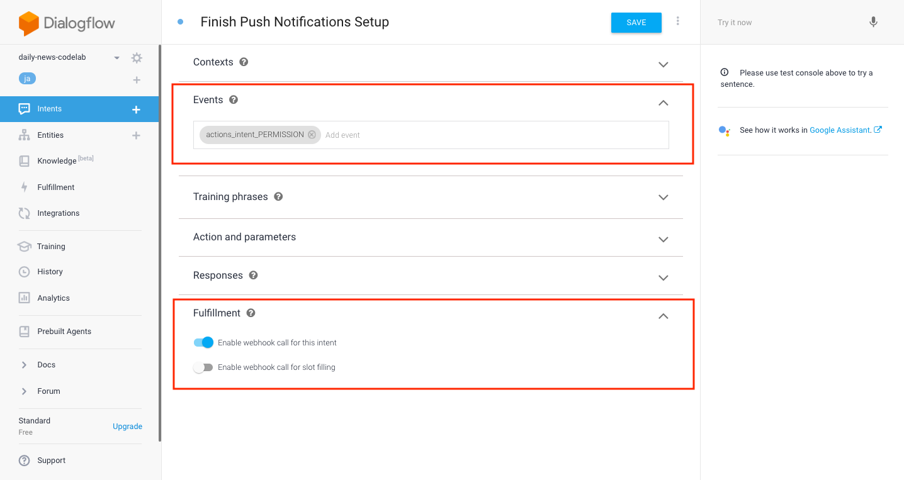
- 下にある Fulfillment をクリックして、フルフィルメントを設定するためのUIを表示します。そして、Enable webhook call for this intent を ON にします。
- 上にある SAVE ボタンを押して、変更内容を保存します。
"Finish Push Notifications Setup" インテントハンドラ関数を作成する
フルフィルメントにて actions_intent_PERMISSION イベントを処理する関数を追加します。 index.js 内に、以下のコードを追加してください。追加場所は、コメント行が書かれている場所です。
"Finish Push Notifications Setup" インテントハンドラ関数
// "Finish Push Notifications Setup"を処理するハンドラ関数の登録
app.intent("Finish Push Notifications Setup", (conv, params, granted) => {
if (granted) {
const userId = conv.arguments.get("UPDATES_USER_ID");
console.log("userId", userId);
conv.close("ニュースをすぐにお届けいたします。また会いましょう。");
} else {
reply(conv, "気が向いたら登録してください。いつのニュースを知りたいですか？");
}
});Push Notifications による通知の送信をユーザが許可したかどうかは、 app.intent() 関数の第2引数で渡しているコールバック関数の第3引数として渡される値を見ることで判断することができます。上記のコードでは、 granted という引数です。この値が undefined ではなければ、ユーザが通知の送信を許可したことになります。
ここで、 conv.arguments.get("UPDATES_USER_ID") という処理を行うことで、通知の送信を許可したユーザのID文字列を取得しています。本来であれば、この値をデータベースに格納するなどが必要ですが、このコードラボではログに出力しています。この値は、後ほどActions APIを使って通知を送信する際に必要となります。
もし通知の送信が許可されていれば、 conv.close() 関数を使って、返事をすると同時に会話を終了します。
Latest News インテントをPush Notificationsとして登録する
Push Notifications機能を使ってユーザに通知を送信するためには、Actions on Google Consoleにて、インテントをPush Notificationsの対象として登録することが必要です。登録を行うために、以下の操作を行います。
- 左のナビゲーションのDialogflow Consoleにて、Integrations をクリックします。その後、Google Assistant > Integration Settings をクリックします。
- Implicit invocation の Add intent フィールドに "Latest News" と入力して Enter キーを押します。
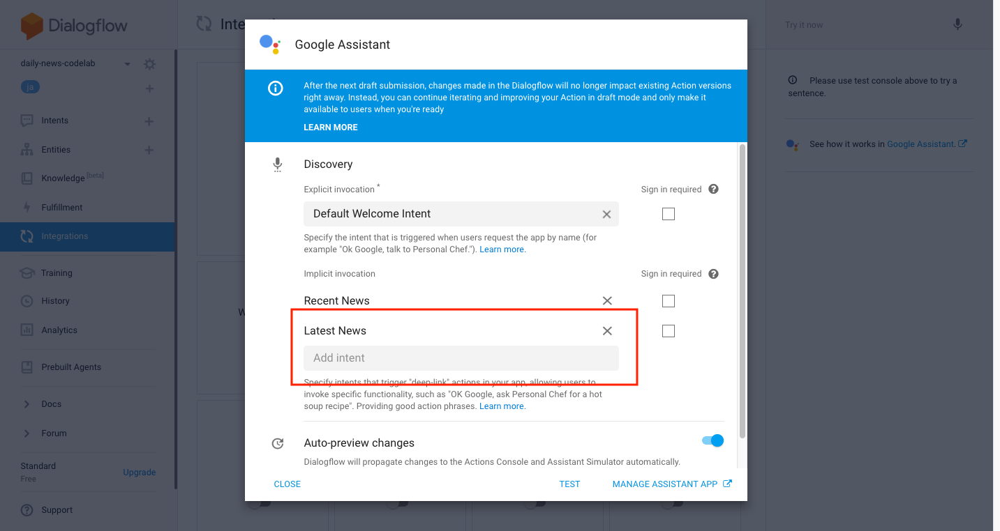
- TEST をクリックします。これにより、新規タブにて Actions on Google Console が開きます。
- Actions on Google Consoleの左にあるナビゲーションメニューから Actions をクリックします。その後、右の一覧から Latest News の行をクリックします。

- ページの下にある Would you like to send push notifications? If yes, user permission will be needed. を ON に変更します。そして、 Content title フィールドに "最新のニュース" と入力します。この文字列は、通知に含まれます。
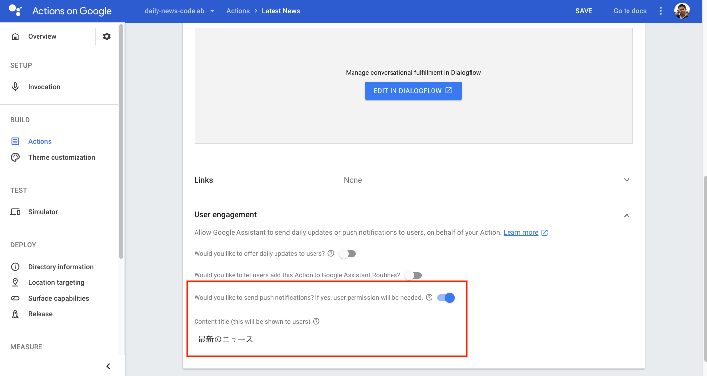
- ページの右上にある SAVE ボタンを押します。
Push Notificationsのユーザ許諾の動作確認をする
では、Push Notificationsを使って通知を行うために必要となるユーザ許諾について、動作確認を行いましょう。このコードラボでは、Daily Updatesの時と同じように、スマートフォンにて動作確認を行いましょう（実際にはActions シミュレータでも大丈夫です）。動作確認の手順は、以下となります。
- スマートフォン上で、Googleアシスタントを起動します。そして、"テスト用アプリにつないで" と話しかけて、アクションを呼び出します。アクションから、ウェルカムメッセージが届きます。
- "リアルタイムに受け取る" と話しかけます。
- Googleアシスタントが通知を送信して良いかどうか問い合わせをしてくるので、"はい" と返事をします。
ここで、通知の送信を許諾したユーザのID文字列をログから見つけます。以下の操作を行ってください。
- Dialogflowの Fulfillment のページの下にある View execution logs in the Firebase console というリンクをクリックします。新規タブでCloud Functions for Firebaseのログ画面が表示されます。
userId: ...という行を探します。そこに書かれている文字列が対象ユーザのID文字列です。これをメモしておきます。
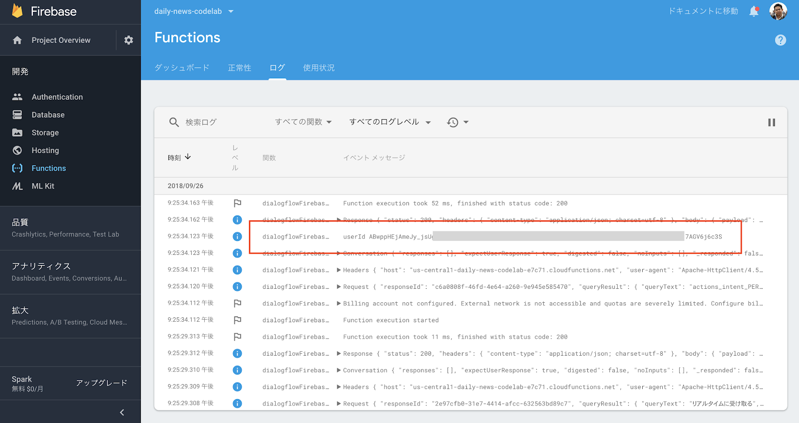
Push Notificationsによる通知の送信を許諾したユーザのID文字列を得ることができれば、実際に通知を送信することが可能です。
このセクションでは、先ほど通知の送信を許可したユーザ向けに、実際に通知を送信するための機能を作成します。このコードラボでは、通知の送信処理について、フルフィルメントとしてではなく、単独のJavaScriptファイルとして作成します。
Actions APIを利用可能にする
Push Notificationsを使って通知を送信する際には、Actions APIを利用します。Actions on GoogleやDialogflowにプロジェクトを作っただけでは、Actions APIを使うことはできません。Google Cloud Platformにて、Actions APIを利用可能に設定する必要があります。
以下の操作を行って、Actions APIを有効にしてください。
- Dialogflowの左にあるナビゲーションメニューには、Dialogflowエージェント名と共に歯車のアイコンがあります。そのアイコンをクリックして、設定画面を開きます。
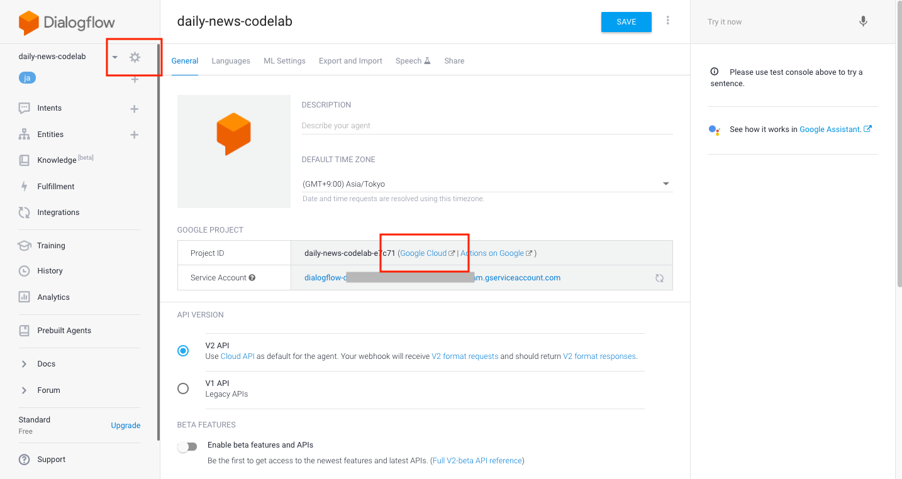
- GOOGLE PROJECT にある Google Cloud リンクをクリックします。新規タブにて、Google Cloud PlatformのConsoleが開きます。ヘッダにあるプロジェクト名が "daily-news-codelab" が選択されていることを確認してください。
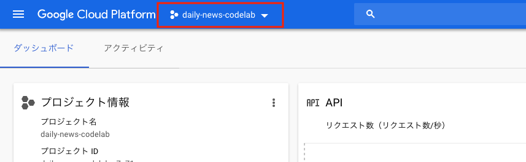
- 左上のハンバーガーメニューボタンをクリックして、その中にある APIとサービス をクリックします。そして、 ダッシュボード を選択します。

- ページ上部にある APIとサービスの有効化 をクリックします。
- APIとサービスを検索 フィールドに、"Actions API" と入力します。すると、APIの候補が表示されるので、その中から "Actions API" をクリックします。
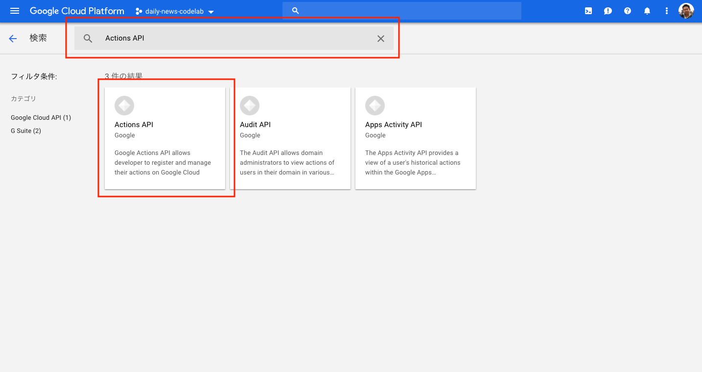
- Actions APIの説明ページにある 有効にする ボタンをクリックします。

Actions APIが有効になった後に、Actions APIのダッシュボード画面が表示されます。
サービスアカウントキーを発行する
通知を送信するためのActions APIを利用するために、Google Cloud Platformにてサービスアカウントキーを発行します。発行されたサービスアカウントキーにより、Actions APIを利用するためのクライアント認証が行われます。
以下の操作を行って、サービスアカウントキーを発行してください。
- Google Cloud Platformの左上のハンバーガーメニューボタンをクリックして、その中にある APIとサービス をクリックします。そして、 認証情報 を選択します。
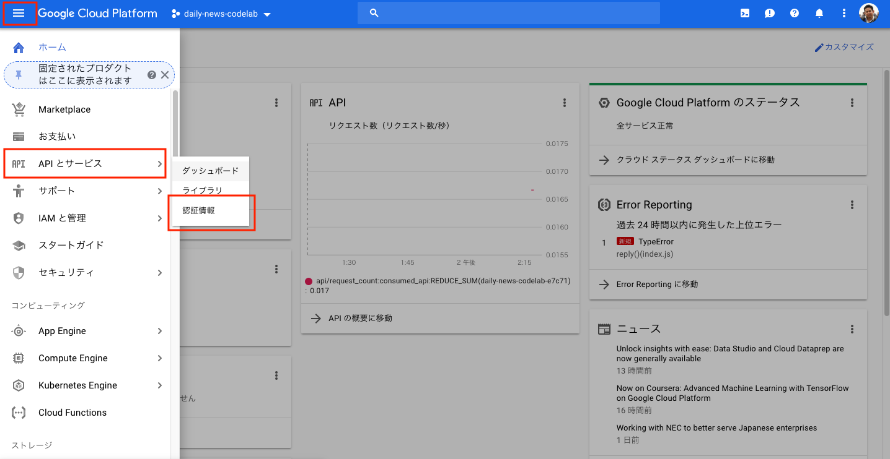
- 認証情報を作成 プルダウンメニューから、 サービスアカウント を選択します。
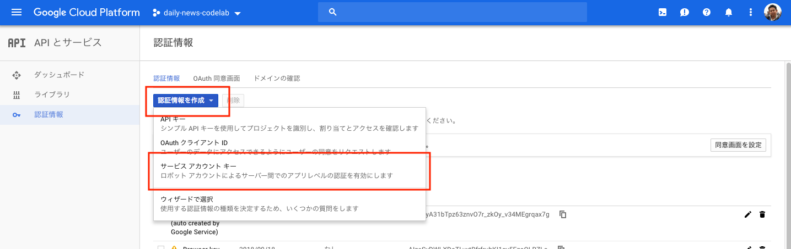
- サービスアカウント として "新しいサービスアカウント" を選択し、以下の内容を入力します。
- サービスアカウント名: "notifications"
- 役割: オーナー
- キーのタイプ: JSON
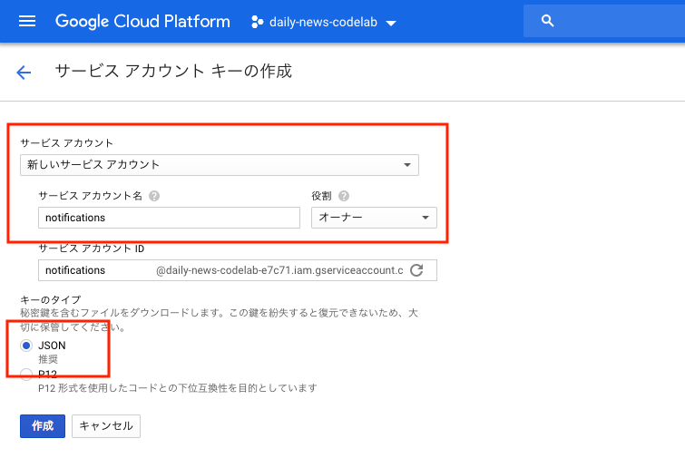
- 作成 ボタンをクリックします。JSONファイルのダウンロードが開始されるので、保存先を選択します。
Node.jsプロジェクトを作成する
ここからは、通知を送信するためのJavaScriptファイルの作成に取りかかります。まずは、以下の手順を行って、ディレクトリを作成して、Node.jsプロジェクトを開始します。
- ターミナル内で、任意の場所に
daily-news-codelabディレクトリを作成して、その中に移動します。
mkdir daily-news-codelab
cd daily-news-codelabnpmコマンドを使って、Node.jsプロジェクトを作成します。いくつか質問されますが、全て Enter キーを押して回答します。
npm init- 依存ライブラリとして、 googleapis および request をインストールします。
npm install googleapis --save
npm install request --save通知を送信するJavaScriptファイルを作成する
Node.jsプロジェクトの準備が整いました。手元に以下があることを確認してください。
- 通知を送信するユーザのID文字列
- サービスアカウントキーのJSONファイル
先ほど作成した daily-news-codelab ディレクトリ内に、以下の内容で send-notification.js という名前でファイルを作成してください。
send-notification.js
"use strict";
const {google} = require("googleapis");
const key = require("<SERVICE_ACCOUNT_KEY_JSON_FILE_PATH>");
const request = require("request");
const jwtClient = new google.auth.JWT(
key.client_email,
null,
key.private_key,
[
"https://www.googleapis.com/auth/actions.fulfillment.conversation"
],
null
);
jwtClient.authorize((err, tokens) => {
const options = {
userNotification: {
title: process.argv[2]
},
target: {
userId: "<TARGET_USER_ID>",
intent: "Latest News",
locale: "ja-JP"
}
};
request.post("https://actions.googleapis.com/v2/conversations:send", {
auth: {
"bearer": tokens.access_token
},
json: true,
body: {
customPushMessage: options
}
}, (err, response, body) => {
console.log(response.statusCode + ":" + response.statusMessage);
});
});send-notification.js ファイルの中に、修正すべき箇所が2つあります。以下の内容で修正を行ってください。
<SERVICE_ACCOUNT_KEY_JSON_FILE_PATH>- サービスアカウントキーのJSONファイル<TARGET_USER_ID>- 通知を送信するユーザのID文字列
コードの前半部分は、サービスアカウントキーのJSONファイルの内容を読み込み、アクセストークンを得るための処理となります。その後、 request() 関数を使って、Actions API のエンドポイントに対して、通知を送信するために必要となる情報を渡しています。具体的には、以下の内容を指定します。
- body.customPushMessage.userNotification.title - 通知のタイトル文字列。
- body.customPushMessage.target.userId - 通知を送信するユーザのID文字列。
- body.customPushMessage.target.intent - 通知をタップした際にトリガーするインテントの名前。
- body.customPushMessage.target.locale - 国と言語（IETF BCP-47）。
通知のタイトル文字列は、 process.argv[2] として、 send-notification.js ファイルを実行する際のコマンドライン引数として渡すことができるようにしています。
通知を送信する
ターミナル内で以下のコマンドを実行してください。
node send-notification.js "ユーザ数1億人突破!"以下のように表示されれば、通知の送信依頼が正常に受け付けられたことになります。
200:OKスマートフォンに通知が来ていることを確認してください。そして、通知をタップしてください。
通知を解除する場合は、受け取った通知にある「停止」をタップします。これにより、Googleアシスタントは通知を止めて良いかどうか聞いてきますので、"はい" と答えてください。
おめでとうございます！
あなたは今、Actions on Googleを使った会話型のユーザインタフェースを構築して、ユーザに積極的に通知を送信してUser Engagementを高める機能を追加する方法を知ることができました。
What we've covered
- Daily Updatesを使った毎日指定された時刻にユーザが通知を受け取ることができる仕組みの理解と組み込み方法。
- Push Notificationsを使ったリアルタイムな通知の送信方法。
次は何ですか？
Daily UpdatesおよびPush Notificationsの使い方を学ぶために、Googleはよりリッチなコードサンプルを提供しています。
Actions on Googleについて学ぶために、以下のリソースについても参考にすることができます:
- actions.google.com: Actions on Googleの公式ドキュメントサイトです。
- Actions on Google GitHub repo: サンプルコードとライブラリがあります。
- Dialogflow.com: Dialogflowの公式ドキュメントサイトです。
Twitter @ActionsOnGoogle をフォローしてください。また、あなたが開発したものを #AoGDevs にてシェアしてください。
Feedback survey
次に行く前に、このフォームを使って私たちにフィードバックを送ってください！